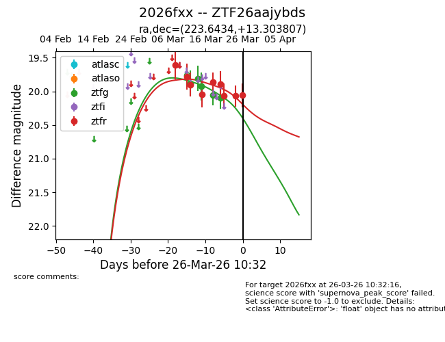
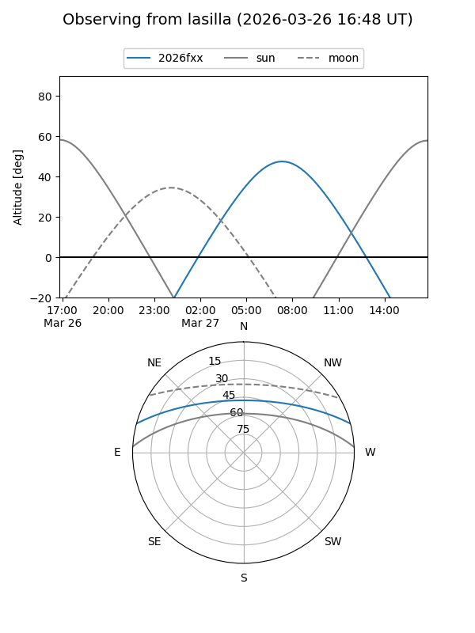
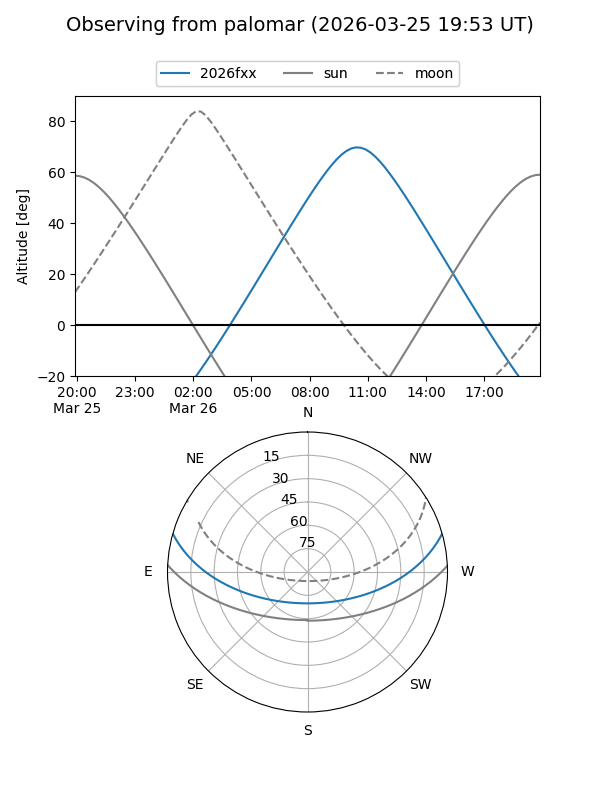
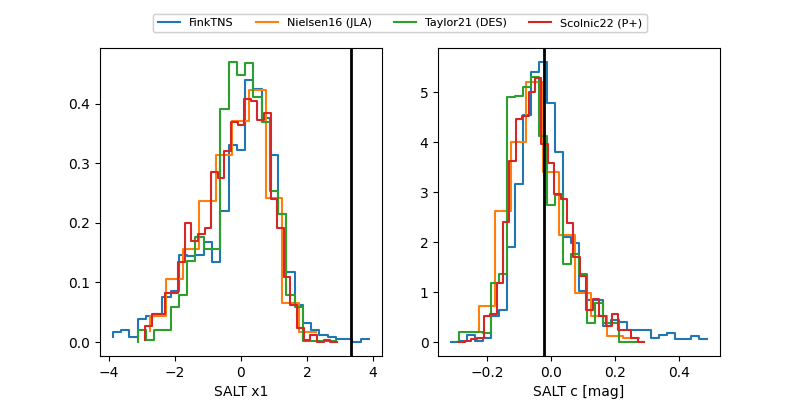

2026fxx
Target 2026fxx at 2026-03-26 10:34
Aliases and brokers:
FINK: link
Lasair: link
ALeRCE: link
TNS: link
YSE: link
alt names
ZTF26aajybds (ztf,fink_ztf)
2026fxx (tns,yse)
Coordinates:
equatorial (ra, dec) = 223.6434,+13.30381
equatorial (HMS+DMS) = 14:54:34.41,+13:18:13.71
galactic (l, b) = (13.4267,+58.10324)
Flags:
Photometry:
last ztfg=20.09, ztfr=20.06
5 ztfg, 9 ztfr detections
Lightcurve

Visibility


Additional plots
